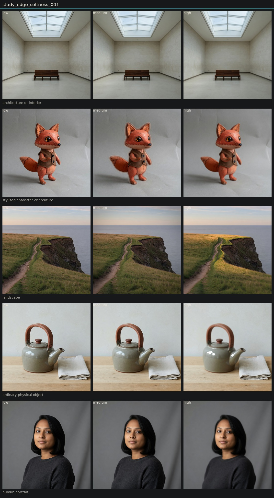

Controlled variation of edge softness
Hold subject via locked anchor images. image_edit each anchor to low, medium, and high of one candidate. Do not change other dimensions on purpose.
High edge softness usually melts the whole subject, especially the teapot. That is optical softness, not contour width. The fox is the only mild edge-only result. Treat as a near-alias or child of optical softness on this instrument.

human portrait
ordinary physical object
architecture or interior
landscape
stylized character or creature
Entanglement
- Object high is global defocus.
- Portrait high melts hair and face together.
- No circular orbs and no glowing eyes. The hold against those leaks worked.
Next
- If kept, test a weaker high phrase: thicken outlines only, keep pores and glaze texture.